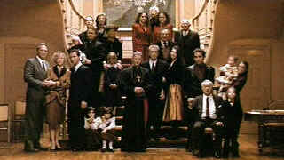

| Godfather
Part III (SE)B,B+ |
| Paramount/1990/170/ANA 1.85 |
Sixteen years after The Godfather Part II, Francis Ford Coppola
returns to the material that established his place in the pantheon of director greats. The task of
living up to the history of the first two Godfather epics is a flat faced mountain at the
North Pole. Taken by itself, The Godfather Part III is okay, but in the company of its Godfather
fellows, it never even gets a foot up the mountain.
The memorable moments are few and far between. The attempt to link Godfather
III stylistically to the first two films shows far too much strain. The enduring vision of the Godfather III has to be the silent scream of
Michael Corleone. It is the one moment internal pain melts through the icy veneer the crime leader.
It's a brilliant cinematic moment, worthy of the best of the Godfather films, but
alas, it is but a moment in this third, mostly unmoving, even lugubrious vision of the crumbling
empire of the Corleone family.
 |
| The Vatican takes center stage in
the family portrait. ©Paramount |
Is there a sympathetic character in The Godfather Part III? Can
you feel for the pain of Michael Corleone? Perhaps at the end of the movie it's possible, but it's
too late by then. Let's look at the characters and their basis of reality. Vincent, the
illegitimate child of Sonny Corleone: Hello, is the the guy Michael Corleone embraces after he
bites the ear of mobster Joe Zaza in half. Vincent is so low class he makes Sonny Corleone appear
like Presidential material. Whoops, that was supposed to be Michael. Michael himself is less
dangerous, more cardboard, dried out, used up after years of crime calculations dominating his
being. Connie Corleone, matronly, the chief sponsor of Vincent, is a non-entity. Mary Corleone is
nothing more than a spoiled little rich girl. Joe Zaza is simply a cheap punk in Armani clothing
and Don Altobello less cunning and more sneaky. The Corleone family lawyer is nothing more than an
anonymous suit. Kay is Kay, cold as Michael in her own way. Even the peripheral characters, the
corrupt Cardinal, the chi-chi reporter. I would venture to say the most sympathetic character is
the ancient wheelchair-bound Don Tommasino, and he's merely an unimportant but loyal cog.
With the script for The Godfather Part III, writer/director Coppola
tries hard to up the ante from the previous two films. This time out Michael Corleone really will
succeed in moving the Corleone family totally legitimate. In fact, big business gets equated with
the same underhanded dealings as the mob. Politics of the highest order, for Coppola, involves the
Vatican and Borgia plots of ascension tied to paramount financial concerns. Mafia machinations are
less sophisticated and the Corleone family seems nothing more than a shell of the past. Once again
the Corleone seat of power is New York, Michael has a new haircut and his big moment is addressing
stockholders in a corporate takeover, receiving the Vatican Order of San Sebastian, and doling out
the loot to the boys in the silk suits.
Family conflicts again take front stage. Michael desperately
wants a relationship with his family. His son, to Michael's disappointment, wants to be an opera
singer. There's a painful romance between Corleone cousins to endure. Evening the party is nothing
more than a sad comment on festivities of the past films. Coppola actually directs a couple of
notches above the level of his script. All the production details are excellent as is the
continuing cinematography of Gordon Willis, but nothing can overcome the shortcomings of the story
telling. The party takes place at Corleone's apartment to celebrate the occasion of his receiving
Papal Honors. As in the other Godfather films, while the party unfolds, behind closed doors,
other actions take place.
Al Pacino once again assays Michael Corleone. His vocal delivery, a scratched
whisper, is reminiscent of Brando as Veto Corleone. Pacino is excellent as Michael, but fails to
overcome the chains of the script. Andy Garcia plays Vincent with a leer and a swagger ripe enough
to fertilize a farm. Sofia Coppola actually plays Mary as scripted, shallow, awkward and innocent.
Eli Wallach lays on the accent a bit too thick as Don Altobello.
The look and feel of The Godfather Part III DVD is consistent with
the overall quality of the three films. Again, grain is delivered in tight patterns. Shadow detail
is somewhat flatter, a reflection of a less interesting lighting scheme. Blacks are good, but feel
somewhat less lustrous in this DVD. The Papal colors get good exposure. When the blood flows, it's
intensely saturated. The images appear true to the original material. Focus is consistently
good. Dolby Digital Surround sound is most aggressive in the casino penthouse sequence. The
operatic passages are clean and powerfully recorded.
Once again, Coppola provides audio commentary to accompany the images in the
special edition. Many of his artistic choices are made clear. Still, it is the final three hours of
the amazing task of recording commentary for the Godfather Collection. It's a lot of
talking. It is a privilege to have the views of Francis Ford Coppola recorded on these
commentaries. It's Coppola's gift to movie lovers and movie historians. I like the irony that
Coppola wanted to call the film The Death of Michael Corleone but was coerced by the studio to
sticking to the Roman numeral scheme.
|
|
|
|

Selections from the Feature Archive include articles on
Akira Kurosawa, Blonde Bimbos,
Frank
Darabont, Steven Culp,
John
Herzfeld or Vietnam: The
Hollywood Pariah, and many more....
Director Walks the Wire
Balanced by an armor of movie lore and filmmaking daring, director John Herzfeld is comfortable
walking the high wire. Check out this interview by Stu Kobak.

The Movie Poster
Archive includes extensive poster images from the films of stars like Susan Hayward, Kirk Douglas,
Katharine Hepburn and many more. Our
featured star is Edward G. Robinson

Starship Troopers/A-,A

A great, modern, war movie that skewers genre conventions. Director Paul Verhoeven controls
the Scifi flick with a perfect flight plan.
Selections from the Feature Archive include articles on
Akira Kurosawa, Blonde Bimbos,
Frank
Darabont, Steven Culp,
John
Herzfeld or Vietnam: The
Hollywood Pariah, and many more....|
Epic Images of Kurosawa

Click on the image above for an original view of Akira Kurosawa's work
 
Looking for information about widescreen movies and hardware. The Widescreen Movie Center
is the place to go.

The National Film Preservation Foundation (NFPF) is the nonprofit organization created by the U.S. Congress to save
America's film heritage.

Elegant DVD portal with news, reviews, links and information
galore. Lovers of Hong
Kong movies will relish MC4's
site that includes reviews and other information about the Hong Kong movie scene. Lovers of Hong
Kong movies will relish MC4's
site that includes reviews and other information about the Hong Kong movie scene.
|